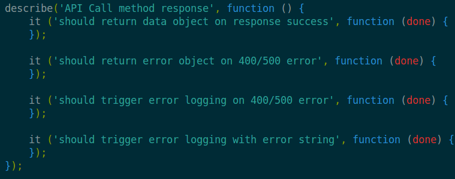
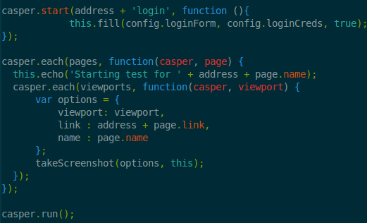
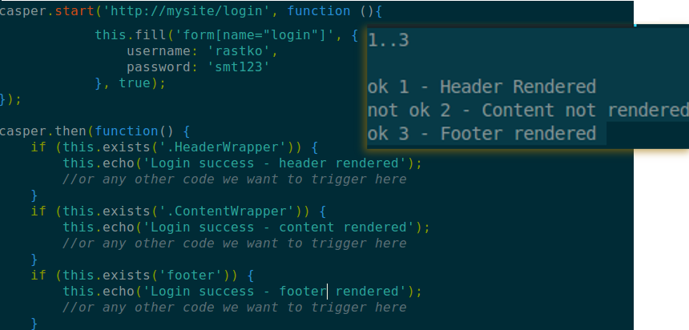

Automated testing
TDD
All automated tests are Unit tests
Wrong
- Unit tests
- Integration tests
- Acceptance tests (aka functional tests)
Let's talk concepts
Jasmine for node.js
 jasmine-node
jasmine-node

Nock.js
nock
It is like The Truman Show for network requests
Be particular.
should pre-set global ns first ofc

So...

Now to test integration
Replace stubs/mocks...
With real stuff...
Simple spies
Real life stuff put to test

of units and systems
Acceptance testing


what do we automate?
Something that absolutely defines working state
smoke tests/ bubble tests / sniff tests

turns this
into this

Performance analysis/testing
- yslow
- cache analisys
- ttfb/resource analysis

Iterating and writing reports based on config.

Running stuff
And writing it down
Coming back to smoke test example:

can easily be written in tap form or JUnit form, or...